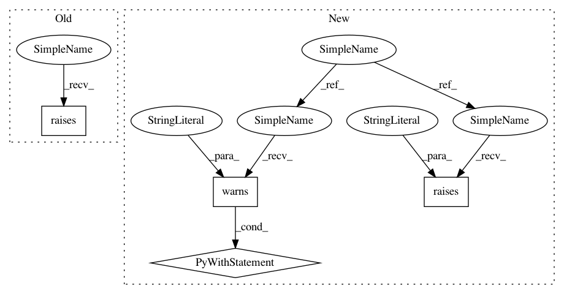

c4119388444e5867ee1a054100c78f57c9f2da25,mne/viz/tests/test_epochs.py,,test_plot_psd_epochs,#,304
Before Change
epochs.plot_psd(average=True, spatial_colors=False)
epochs.plot_psd(average=False, spatial_colors=True)
epochs.plot_psd(average=False, spatial_colors=False)
pytest.raises(RuntimeError, epochs.plot_psd_topomap,
bands=[(0, 0.01, "foo")]) // no freqs in range
epochs.plot_psd_topomap()
// with a flat channel
After Change
epochs.plot_psd(average=False, spatial_colors=True)
epochs.plot_psd(average=False, spatial_colors=False)
// test plot_psd_topomap errors
with pytest.raises(RuntimeError, match="No frequencies in band"):
epochs.plot_psd_topomap(bands=[(0, 0.01, "foo")])
// test vmin, vmax deprecation
with pytest.warns(DeprecationWarning, match="you didn\"t specify "vlim""):
epochs.plot_psd_topomap(vmax=5)
with pytest.warns(DeprecationWarning, match="provided values for "vlim""):
epochs.plot_psd_topomap(vmax=5, vlim=(None, 7))
plt.close("all")
// test defaults
fig = epochs.plot_psd_topomap()
assert len(fig.axes) == 10 // default: 5 bands (δ, θ, α, β, γ) + colorbars
In pattern: SUPERPATTERN
Frequency: 3
Non-data size: 4
Instances
Project Name: mne-tools/mne-python
Commit Name: c4119388444e5867ee1a054100c78f57c9f2da25
Time: 2020-04-20
Author: dan@mccloy.info
File Name: mne/viz/tests/test_epochs.py
Class Name:
Method Name: test_plot_psd_epochs
Project Name: mne-tools/mne-python
Commit Name: 826ddd2f669fb35e574698042378c83e9b1217ca
Time: 2021-01-14
Author: dan@mccloy.info
File Name: mne/viz/tests/test_topo.py
Class Name:
Method Name: test_plot_joint
Project Name: mne-tools/mne-python
Commit Name: 91473147e57464173dedb00ce20f3d5aefd883bd
Time: 2020-10-12
Author: larson.eric.d@gmail.com
File Name: mne/preprocessing/tests/test_ica.py
Class Name:
Method Name: test_ica_noop
Project Name: mne-tools/mne-python
Commit Name: c4119388444e5867ee1a054100c78f57c9f2da25
Time: 2020-04-20
Author: dan@mccloy.info
File Name: mne/viz/tests/test_epochs.py
Class Name:
Method Name: test_plot_psd_epochs